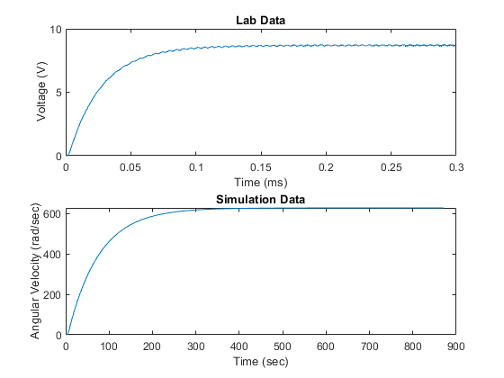

Activity 5
3/25/21 Michael White Section 3 / Online
close all; clear all; clc; % I created a simplified excel table that includes the times and averaged % values as two, simple columns, and import it here with xlsread. data = xlsread('SimplifiedData.xlsx'); time = data(:,1); voltage = data(:,2); % Set parameters for simulation Kt = 7.68e-3; % Nm/A Kb = 7.68e-3; % V/(rad/sec) L = 0.18e-3; % H J = 3.9e-7; % kg*m^2 bm = 8.148e-7; % Nm/(rad/sec) Ra = 2.6; % Ohm % Run simulation file from Activity 2 simout = sim('DC_Motor_Simulation_Act2'); % Isolating the data to the first curve (contained in first 0.2 seconds) calculationData = voltage(time <= 0.2); calculationTime = time(time <= 0.2); % Finding the time constant using the 63.2% method maxValue = max(calculationData); timeConstantValue = maxValue*0.632; absDiffList = abs(calculationData-timeConstantValue); timeConstantPoint = ... [calculationTime(absDiffList == min(absDiffList)),... calculationData(absDiffList == min(absDiffList))]; % Define parameters to be used Kt = 7.68e-3; % Nm/A Kb = 7.68e-3; % V/(rad/sec) L = 0.18e-3; % H J = 3.9e-7; % kg*m^2 bm = 8.148e-7; % Nm/(rad/sec) Ra = 2.6; % Ohm Va = 4; % V % Import data from other activities w = 397.1749; timeConstant_Act2 = 0.016463; timeConstant_Act3 = 0.0177; % Calculate beq from derived equation beq = (1-exp(-1))*(Kt/(Ra*w)); % Calculate jeqs using time constant - beq relationship jeq2 = timeConstant_Act2*beq; jeq3 = timeConstant_Act3*beq; jeqLab = timeConstantPoint(1)*beq; % Display results disp(strcat("The value of Beq is ",num2str(beq))); disp(strcat("The value of Jeq for Activity 2 is ",num2str(jeq2))); disp(strcat("The value of Jeq for Activity 3 is ",num2str(jeq3))); disp(strcat("The value of Jeq from the lab data is ",num2str(jeqLab))); % Graph voltage data from lab subplot(2,1,1); plot(time, voltage); xlabel('Time (ms)'); ylabel('Voltage (V)'); title('Lab Data'); % Graph data from simulations subplot(2,1,2); plot(simout.Speed.Data(simout.Speed.Time <= 0.2)); xlabel('Time (sec)'); ylabel('Angular Velocity (rad/sec)'); title('Simulation Data'); % WRITTEN RESPONSES: % The simulated plot looks similar in shape to the experimental data, % though obviously there is some difference mathematically due to the % difference in time constants. % The calculated values are clearly different from the lab results. This % arises obviously from the difference in time constants. The time % constant from the lab is obviously greater than the calculated values. % This makes since as the lab setup is not going to be ideal and will % ultimately operate slower for potentially many different reasons. The % torque on the motor could have been greater than calculated. The friction % on the motor could have affected this, or the weight of the rod. Many % things could have affected this outcome.
The value of Beq is 4.7012e-06 The value of Jeq for Activity 2 is 7.7395e-08 The value of Jeq for Activity 3 is 8.3211e-08 The value of Jeq from the lab data is 1.3398e-07